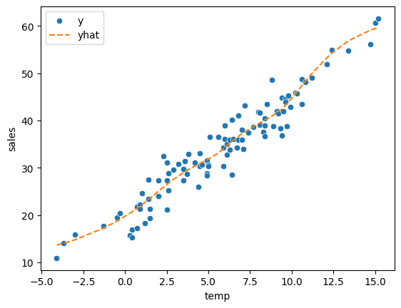
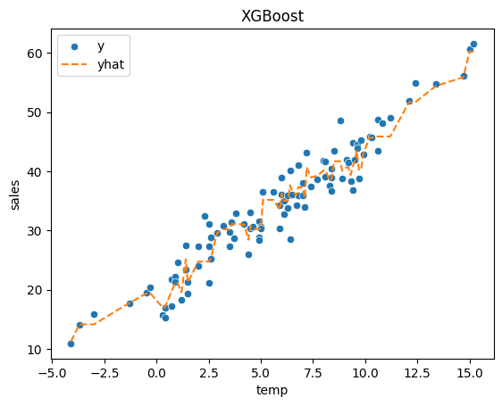

import numpy as np
import pandas as pd
import matplotlib.pyplot as plt
import seaborn as sns
import sklearn.metrics
#---#
import pickle
from autogluon.tabular import TabularPredictor
import autogluon.eda.auto as auto
#---#
import warnings
warnings.filterwarnings('ignore')13wk-48: 아이스크림 / 자료분석(Autogluon)
1. 강의영상
2. Imports
3. Data
temp = pd.read_csv('https://raw.githubusercontent.com/guebin/DV2022/master/posts/temp.csv').iloc[:,3].to_numpy()[:100]
temp.sort()
np.random.seed(43052)
eps = np.random.randn(100)*3 # 오차
icecream_sales = 20 + temp * 2.5 + eps
df_train = pd.DataFrame({'temp':temp,'sales':icecream_sales})sns.scatterplot(df_train, x='temp',y='sales')
4. 적합
A. 맨날 쓰는 코드
# step1 -- pass
# step2
predictr = TabularPredictor(label='sales')
# step3
predictr.fit(df_train)
# step4
yhat = predictr.predict(df_train)No path specified. Models will be saved in: "AutogluonModels/ag-20231201_091757/"
Beginning AutoGluon training ...
AutoGluon will save models to "AutogluonModels/ag-20231201_091757/"
AutoGluon Version: 0.8.2
Python Version: 3.10.13
Operating System: Linux
Platform Machine: x86_64
Platform Version: #26~22.04.1-Ubuntu SMP PREEMPT_DYNAMIC Thu Jul 13 16:27:29 UTC 2
Disk Space Avail: 248.45 GB / 490.57 GB (50.6%)
Train Data Rows: 100
Train Data Columns: 1
Label Column: sales
Preprocessing data ...
AutoGluon infers your prediction problem is: 'regression' (because dtype of label-column == float and many unique label-values observed).
Label info (max, min, mean, stddev): (61.561043278721556, 10.90026146402572, 33.97342, 10.63375)
If 'regression' is not the correct problem_type, please manually specify the problem_type parameter during predictor init (You may specify problem_type as one of: ['binary', 'multiclass', 'regression'])
Using Feature Generators to preprocess the data ...
Fitting AutoMLPipelineFeatureGenerator...
Available Memory: 127664.44 MB
Train Data (Original) Memory Usage: 0.0 MB (0.0% of available memory)
Inferring data type of each feature based on column values. Set feature_metadata_in to manually specify special dtypes of the features.
Stage 1 Generators:
Fitting AsTypeFeatureGenerator...
Stage 2 Generators:
Fitting FillNaFeatureGenerator...
Stage 3 Generators:
Fitting IdentityFeatureGenerator...
Stage 4 Generators:
Fitting DropUniqueFeatureGenerator...
Stage 5 Generators:
Fitting DropDuplicatesFeatureGenerator...
Types of features in original data (raw dtype, special dtypes):
('float', []) : 1 | ['temp']
Types of features in processed data (raw dtype, special dtypes):
('float', []) : 1 | ['temp']
0.0s = Fit runtime
1 features in original data used to generate 1 features in processed data.
Train Data (Processed) Memory Usage: 0.0 MB (0.0% of available memory)
Data preprocessing and feature engineering runtime = 0.03s ...
AutoGluon will gauge predictive performance using evaluation metric: 'root_mean_squared_error'
This metric's sign has been flipped to adhere to being higher_is_better. The metric score can be multiplied by -1 to get the metric value.
To change this, specify the eval_metric parameter of Predictor()
Automatically generating train/validation split with holdout_frac=0.2, Train Rows: 80, Val Rows: 20
User-specified model hyperparameters to be fit:
{
'NN_TORCH': {},
'GBM': [{'extra_trees': True, 'ag_args': {'name_suffix': 'XT'}}, {}, 'GBMLarge'],
'CAT': {},
'XGB': {},
'FASTAI': {},
'RF': [{'criterion': 'gini', 'ag_args': {'name_suffix': 'Gini', 'problem_types': ['binary', 'multiclass']}}, {'criterion': 'entropy', 'ag_args': {'name_suffix': 'Entr', 'problem_types': ['binary', 'multiclass']}}, {'criterion': 'squared_error', 'ag_args': {'name_suffix': 'MSE', 'problem_types': ['regression', 'quantile']}}],
'XT': [{'criterion': 'gini', 'ag_args': {'name_suffix': 'Gini', 'problem_types': ['binary', 'multiclass']}}, {'criterion': 'entropy', 'ag_args': {'name_suffix': 'Entr', 'problem_types': ['binary', 'multiclass']}}, {'criterion': 'squared_error', 'ag_args': {'name_suffix': 'MSE', 'problem_types': ['regression', 'quantile']}}],
'KNN': [{'weights': 'uniform', 'ag_args': {'name_suffix': 'Unif'}}, {'weights': 'distance', 'ag_args': {'name_suffix': 'Dist'}}],
}
Fitting 11 L1 models ...
Fitting model: KNeighborsUnif ...
-4.2111 = Validation score (-root_mean_squared_error)
0.01s = Training runtime
0.01s = Validation runtime
Fitting model: KNeighborsDist ...
-4.6714 = Validation score (-root_mean_squared_error)
0.01s = Training runtime
0.01s = Validation runtime
Fitting model: LightGBMXT ...
-35.2477 = Validation score (-root_mean_squared_error)
0.41s = Training runtime
0.0s = Validation runtime
Fitting model: LightGBM ...
-5.3708 = Validation score (-root_mean_squared_error)
0.31s = Training runtime
0.0s = Validation runtime
Fitting model: RandomForestMSE ...
-4.4041 = Validation score (-root_mean_squared_error)
0.25s = Training runtime
0.02s = Validation runtime
Fitting model: CatBoost ...
-3.8364 = Validation score (-root_mean_squared_error)
0.16s = Training runtime
0.0s = Validation runtime
Fitting model: ExtraTreesMSE ...
-4.2375 = Validation score (-root_mean_squared_error)
0.27s = Training runtime
0.09s = Validation runtime
Fitting model: NeuralNetFastAI ...
-3.7128 = Validation score (-root_mean_squared_error)
0.7s = Training runtime
0.01s = Validation runtime
Fitting model: XGBoost ...
-4.0555 = Validation score (-root_mean_squared_error)
0.1s = Training runtime
0.0s = Validation runtime
Fitting model: NeuralNetTorch ...
-3.4399 = Validation score (-root_mean_squared_error)
1.23s = Training runtime
0.01s = Validation runtime
Fitting model: LightGBMLarge ...
-3.979 = Validation score (-root_mean_squared_error)
0.36s = Training runtime
0.0s = Validation runtime
Fitting model: WeightedEnsemble_L2 ...
-3.4399 = Validation score (-root_mean_squared_error)
0.19s = Training runtime
0.0s = Validation runtime
AutoGluon training complete, total runtime = 4.29s ... Best model: "WeightedEnsemble_L2"
TabularPredictor saved. To load, use: predictor = TabularPredictor.load("AutogluonModels/ag-20231201_091757/")[1000] valid_set's rmse: 5.45375
[2000] valid_set's rmse: 5.40245B. 적합결과 시각화
sns.scatterplot(df_train, x='temp',y='sales',label='y')
sns.lineplot(df_train, x='temp',y=yhat,color='C1',linestyle='--',label='yhat')
plt.legend()
- 잘 맞춘다?
C. 모형들 확인
predictr.leaderboard(silent=True)| model | score_val | pred_time_val | fit_time | pred_time_val_marginal | fit_time_marginal | stack_level | can_infer | fit_order | |
|---|---|---|---|---|---|---|---|---|---|
| 0 | NeuralNetTorch | -3.439941 | 0.006315 | 1.233929 | 0.006315 | 1.233929 | 1 | True | 10 |
| 1 | WeightedEnsemble_L2 | -3.439941 | 0.006579 | 1.426151 | 0.000264 | 0.192222 | 2 | True | 12 |
| 2 | NeuralNetFastAI | -3.712791 | 0.005374 | 0.700766 | 0.005374 | 0.700766 | 1 | True | 8 |
| 3 | CatBoost | -3.836449 | 0.000757 | 0.156355 | 0.000757 | 0.156355 | 1 | True | 6 |
| 4 | LightGBMLarge | -3.978956 | 0.000699 | 0.362364 | 0.000699 | 0.362364 | 1 | True | 11 |
| 5 | XGBoost | -4.055491 | 0.001666 | 0.100733 | 0.001666 | 0.100733 | 1 | True | 9 |
| 6 | KNeighborsUnif | -4.211090 | 0.013718 | 0.006681 | 0.013718 | 0.006681 | 1 | True | 1 |
| 7 | ExtraTreesMSE | -4.237516 | 0.086864 | 0.269765 | 0.086864 | 0.269765 | 1 | True | 7 |
| 8 | RandomForestMSE | -4.404096 | 0.024585 | 0.254683 | 0.024585 | 0.254683 | 1 | True | 5 |
| 9 | KNeighborsDist | -4.671405 | 0.013363 | 0.005603 | 0.013363 | 0.005603 | 1 | True | 2 |
| 10 | LightGBM | -5.370826 | 0.000578 | 0.307852 | 0.000578 | 0.307852 | 1 | True | 4 |
| 11 | LightGBMXT | -35.247682 | 0.000889 | 0.408746 | 0.000889 | 0.408746 | 1 | True | 3 |
D. 최강모형의 r2_score 계산
- r2_score 계산 – 방법1
_y = df_train.sales
_yhat = predictr.predict(df_train)
sklearn.metrics.r2_score(_y,_yhat)0.92978293352643- r2_score 계산 – 방법2
_y = df_train.sales
_yhat = predictr.predict(df_train,model='NeuralNetTorch')
sklearn.metrics.r2_score(_y,_yhat)0.92978293352643E. 특정모형의 적합값 구경
- XGBoost 궁금해..
_y = df_train.sales
_yhat = predictr.predict(df_train,model='XGBoost')
sklearn.metrics.r2_score(_y,_yhat)0.9516437954914487sns.scatterplot(df_train, x='temp', y='sales', label='y')
sns.lineplot(df_train, x='temp',y=_yhat,color='C1',linestyle='--',label='yhat')
ax = plt.gca()
ax.set_title("XGBoost")
plt.legend()